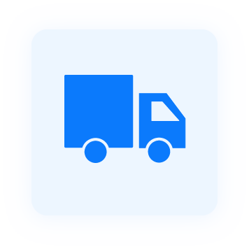
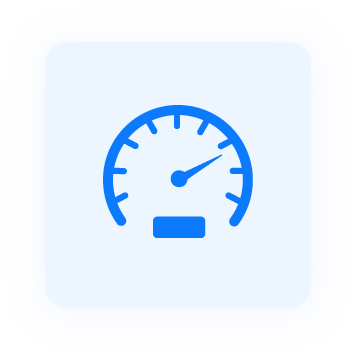

Import orders from Odoo to AntsRoute
Import orders from Odoo to AntsRoute with customer and order details.

Create new shipping method in Odoo
From Odoo, you can add new shipping method using AntsRoute to automate the import of orders.

Optimize routes in AntsRoute
Determine the best delivery routes using AntsRoute integrating time and business constraints.
Access roadmaps from the mobile app
Using the AntsRoute mobile application, drivers access all the details necessary to complete orders.
Communicate with customers
Keep customers updated by sending automated SMS and email notifications.
Update order status from AntsRoute to Odoo
Feedback order details from AntsRoute to Odoo and view proof of delivery.
Analyze the performance
Access route performance indicators in AntsRoute to make the best decisions for your company.
Send delivery report
Avoid any loss of documents or data entry errors thanks to the digital transmission of field data.